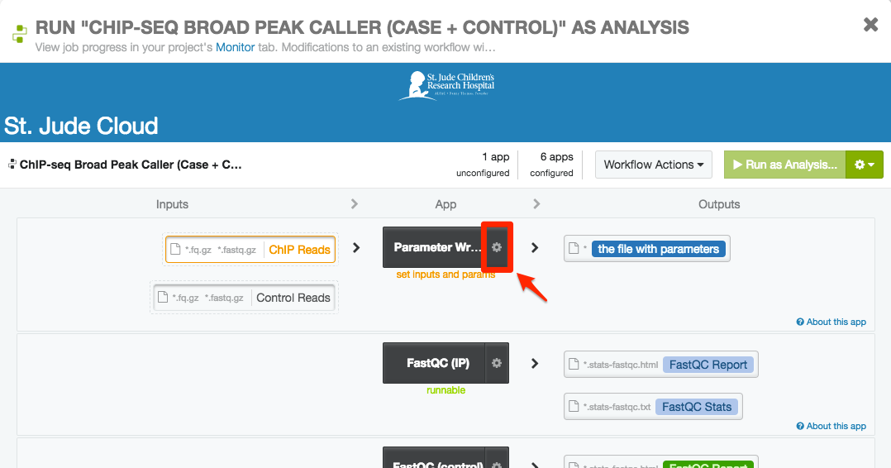

Pipeline Operation¶
Uploading Data¶
The ChIP-Seq Peak Caller takes Gzipped FastQ files generated from IP data as input. You can upload the files you would like to run using the Data Transfer Application or by uploading data manually using the Getting Started with the Command Line.
Note
You should click “Start” before attempting to upload data to the tool (the tool’s workspace is only created once you do this). After you are redirected, you can safely close the tab that was just opened.
Parameter Configuration¶
Click “Start” on the tool’s landing page. You will be redirected to the tool’s workspace, which contains four different pipelines that can be run based on your input data. Initially, you’ll need to decide (1) whether you’d like to run broad/narrow peak calling and (2) whether you have case vs. control or only case data. You should choose the correct workflow based on their names. After you’ve selected your base pipeline, there are various other parameters that you can set.

Warning
If your fragment size is less than 50 base pairs, please refer to the Frequently Asked Questions.
Broad vs. Narrow Peak Calling¶
Choosing between broad and narrow peak calling depends on the experiment design. The following are good rules of thumb for choosing between the two configurations. If you are not sure which configuration to use, please consult with an expert or contact the support personel for this pipeline.
Narrow Peak Calling
If your target protein is a transcription factor, you should probably choose narrow peak calling. You can also try the narrow peak calling workflows for the following histone marks:
- H3K4me3
- H3K4me2
- H3K9-14ac
- H3K27ac
- H2A.Z
Broad Peak Calling
You should try the broad peak calling workflows for the following histone marks:
- H3K36me3
- H3K79me2
- H3K27me3
- H3K9me3
- H3K9me1
Special Cases
In some scenarios, H3K4me1, H3K9me2 and H3K9me3 might behave between narrow and broad shape, you might need to look into each peak region and consult experts.
Other parameters¶
Once you have decided on a base pipeline, you can click that pipeline to open up the workflow screen. You should see something similar to the screenshot below (there might be small differences based on which pipeline you picked). To edit settings, click the gear cog near the middle of the screen (surrounded by a red rectangle in the picture below).
You should now see the application configuration screen. In the bottom right corner of the application, you can set a number of different parameters.

The following are the parameters that can be set, as well as a short description and example value. Any questions about parameters should be directed to pipeline support personel.
| Parameter Name | Description | Example |
|---|---|---|
| Output prefix | A name used a prefix for all outputs in the run | SAMPLE1 |
| Reference genome | Supported reference genome (HG19, HG38, mm9, mm10, dm3) | HG38 |
| Output bigWig | Whether or not to include a bigwig file in the output | True |
| Remove blacklist peaks | Whether or not to remove known problem areas | True |
| Fragment length | Hardcoded fragment length of your reads. ‘NA’ for auto-detect. | NA |
Warning
When setting parameters, please be aware of these common point of failures.
- Do not use spaces anywhere in your input file names, your output prefix, or any of the other parameters. This is generally bad practice and doesn’t play well with the pipeline (consider using “_” instead).
- Do not change the output directory when you run the pipeline. At the top of parameter input page, there is a text box that allows you to change the output folder. Please ignore that field. You only need to specify an output prefix as described aboce. All of the results will be put under /Results/<OUTPUT_PREFIX>.
Running the Tool¶
Selecting inputs¶
If you have not already, click on the appropriate pipeline for your purposes (see Parameter Configuration). You should see something similar to the screenshot below (there might be small differences based on which pipeline you picked). Each box on the left side of the screen is an input to the pipeline. As you can see, for the paired pipeline picture below, the pipeline needs two inputs: FastQ files for case and FastQ files for control.

Clicking on the input box below will allow you to hook up the data you previously uploaded to be analyzed. If you have not yet uploaded your data, see Uploading Data. Once you click on the input boxes, you should be able to select all of the inputs that follow (see image below).

Here, you can select the FastQ file for the case sample and click “Select”. You should see the dialog box dissappear and the files you selected propogate in the input box. If applicable, repeat this process for the control sample.
Starting the workflow¶
Once your inputs are selected, you should be able to start the workflow by clicking the “Run as Analysis…” button in the top right hand corner of the workflow dialog.
Note
If you cannot click this button, please ensure that (1) all of the inputs are correctly hooked up (see Selecting inputs) and (2) all of the required parameters are set (see Parameter Configuration).